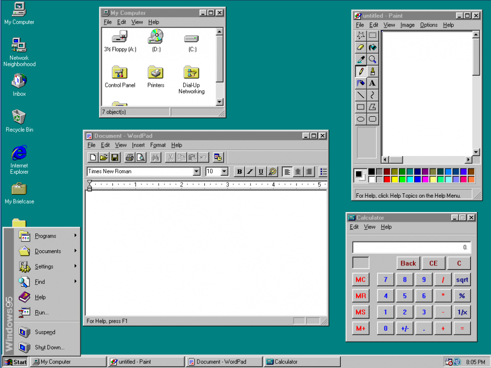

About
Released: 1995
Windows 95 was a landmark release in the history of personal computing. It marked the transition from older, program–manager–based systems to a more user–friendly desktop environment designed for everyday use.
This version introduced many interface elements that became standard in future versions of Windows and influenced operating systems across the industry.
Key Features
- Introduction of the Start Menu
- Taskbar for managing open programs
- Desktop icons and folders
- Improved mouse-based navigation
- Support for long file names
These features helped simplify how users found programs, managed files, and multitasked.
Design Philosophy
Windows 95 focused on clarity and structure. The interface used neutral colors, simple icons, and consistent layouts to make the system easier to understand.
The goal was to reduce complexity and make computers more accessible to non–technical users, especially as home computing became more common.
Impact
Many interface concepts introduced in Windows 95 are still present today. Its success helped establish Windows as a standard platform for personal and professional computing.
